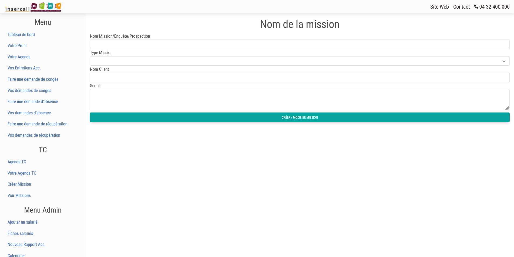
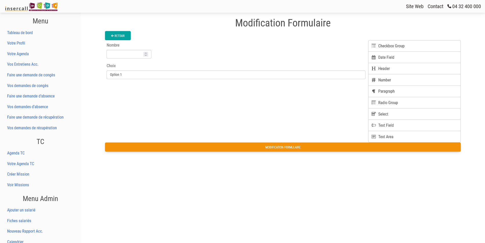
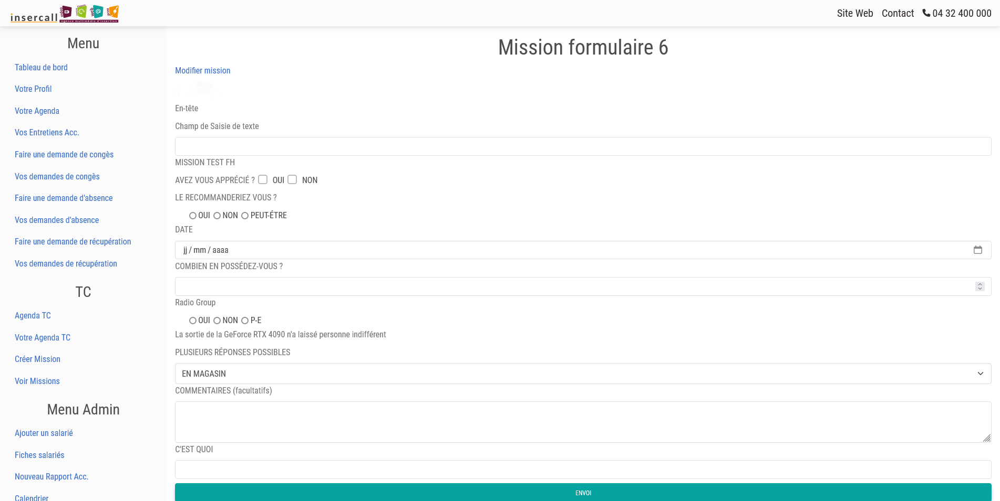

Intranet Insercall
Insercall est une association de chantier d'insertion.
Elle est composée de 2 pôles : Téléconseiller et Multimédia
Le projet consiste à refaire intégralement l'intranet.
Il s'agit d'une application de gestion de missions d'un centre d'appel et de suivi RH.
Elle est développée avec le framework Symfony.

Page de connexion

Tableau de bord

Calendrier des RDV

Formulaire de demande de congès

Création de la mission

Création du formulaire pour la mission

Ajout des données au formulaire spécifique à la mission.
Technologies utilisées
- Symfony 6
- PHP
- MySQL
- HTML
- JavaScript
- Bootstrap